Every admin and test page now lives in one place, with one look, one menu and one lock. A new team board shows what Harry, Mikey and Leo are doing, and which patch notes each change went out in.
THE BIG ONE · ONE LIST RUNS EVERYTHING
57 admin and test pages used to be scattered. Now one list knows every page, and four things read it.
Problem
Finding a test page meant remembering its address. Nobody could see which pages change real saves, and 5 test pages had no lock at all.
Why
Each page was added by hand, in its own way, by whoever built it.
Fix
One page list holds each page's name, owner, group and who may open it. The admin home, the side menu, admin mode and the lock all read that list. Add a page once and it shows up everywhere.
CHECK THESE
1 · THE ADMIN HOME
Every page in 12 groups, with search. Hover a card to see what it does.
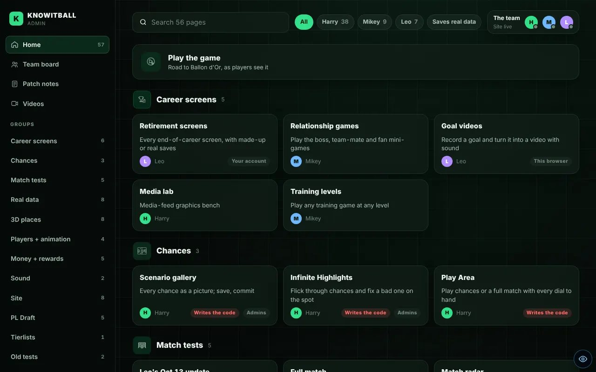
Ops room look. Groups down the side, the team strip top right.
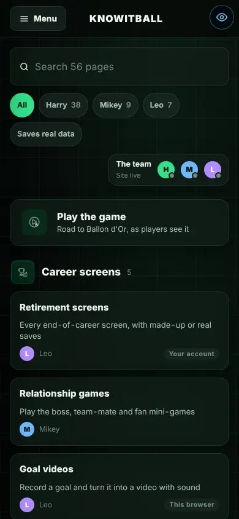
On a phone. Search, owner chips, then the groups.
Search finds a page by its name or by what it does.
Harry / Mikey / Leo chips show only that person's pages.
"Saves real data" shows the pages that change real saves or the live database. Take care on those.
Old tests sit folded at the bottom, out of the way.
The two looks: Ops room and Clean light
Ops room (dark, the default).
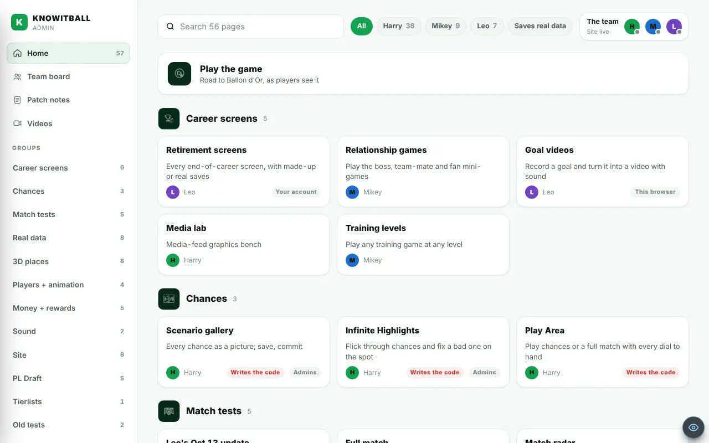
Clean light. Same layout, light paint.
The switch is in the side menu, under Look. It changes this device only.
2 · THE TEAM BOARD
One card each for Harry, Mikey and Leo. You see who is working, what they pushed, and what is live.
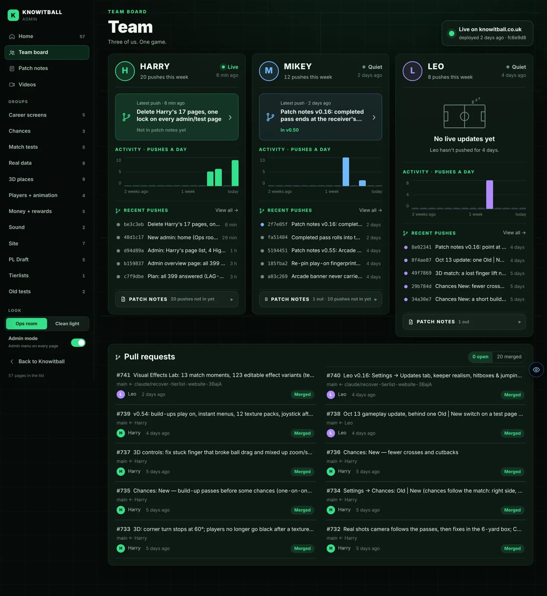
Built from design B, the Ops room picture you picked. Look at the three cards, then the pull requests under them.
The ring and the status. Live = pushed in the last 30 minutes. Active = the last 3 hours. Quiet = longer.
Current work. Live progress bars from that person's chat. Until they are on, the card shows the latest push.
Nobody home. No push for 2 days shows the sleeping pitch.
Activity. Pushes a day over the last 2 weeks.
Recent pushes. The last 5, and "View all" for up to 30. A coloured dot means it is already in a patch note.
Patch notes drop-down. Each patch note that person's pushes went out in, and how many wait for the next one.
Pull requests. Open ones in blue, merged ones in green.
Top right. What is live on knowitball.co.uk, and when it went out.
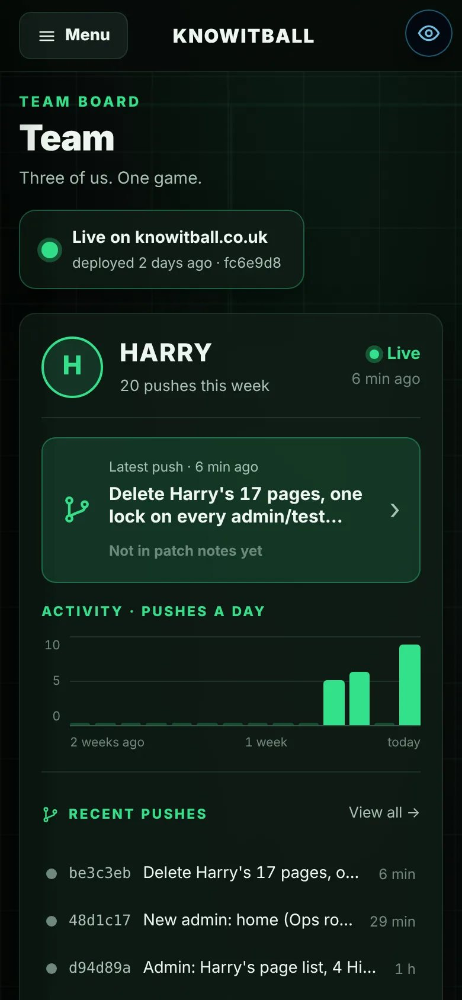
Phone. The cards stack, one person at a time.
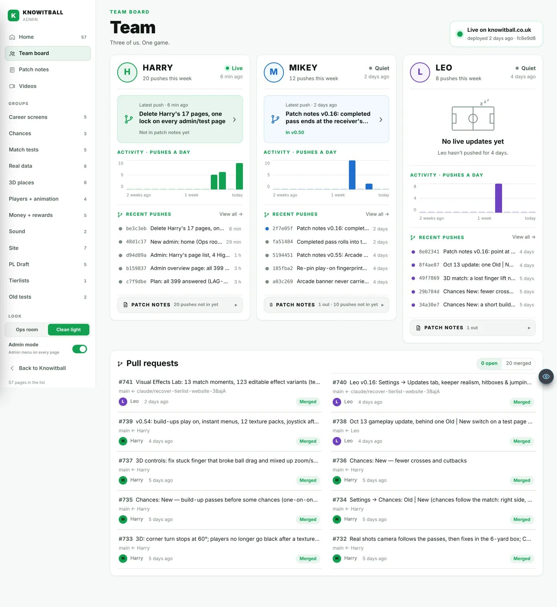
Clean light. The same board in the light look.
2B · LIVE PROGRESS BARS ON EACH CARD
The bars you see in chat can show on the team board too, so everyone sees what is being built right now.
A chat answerswith its progress bars
Only the bars are keptno chatter, no keys
Sent to the sitewith a shared password
Shown on the cardwithin a minute
Switched off until Mikey does the 3 steps in Known issues.
3 · EVERY PUSH KNOWS ITS PATCH NOTE
Tap any push. You see the patch note it went out in, and one tap opens that note.
Pushes from a chat's own branch still count for the right person: the board reads who opened the pull request.
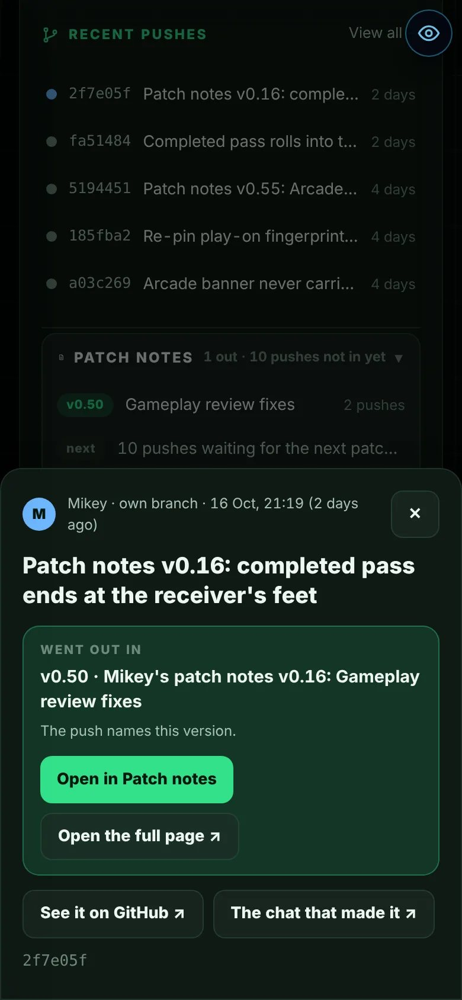
Tap a push: "Went out in v0.50", then Open in Patch notes.
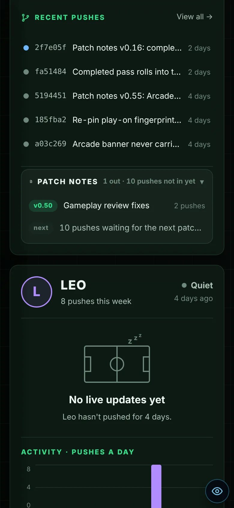
The drop-down on Mikey’s card: one note out, 10 pushes waiting for the next.
4 · PATCH NOTES IN THE SIDE MENU
The full patch notes archive is a tab beside the team board. A push opens straight onto its note.
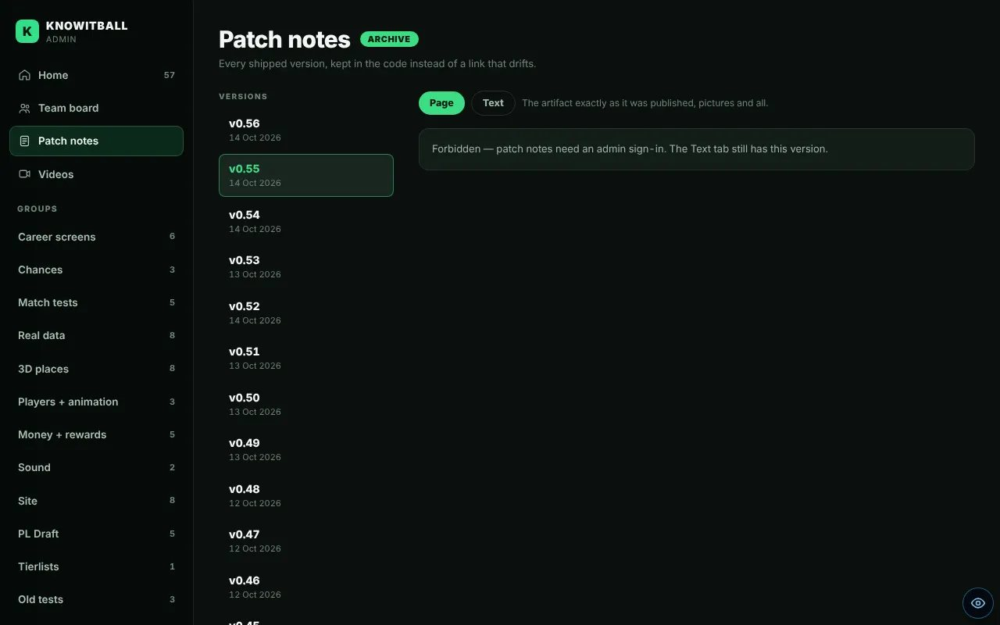
The archive, newest first. You can share a link to one note: the address names the version.
5 · ADMIN MODE: THE RIGHT TOOLS ON ANY PAGE
Switch on Admin mode. Then on any page, the green Admin tab shows the tools for that page first.
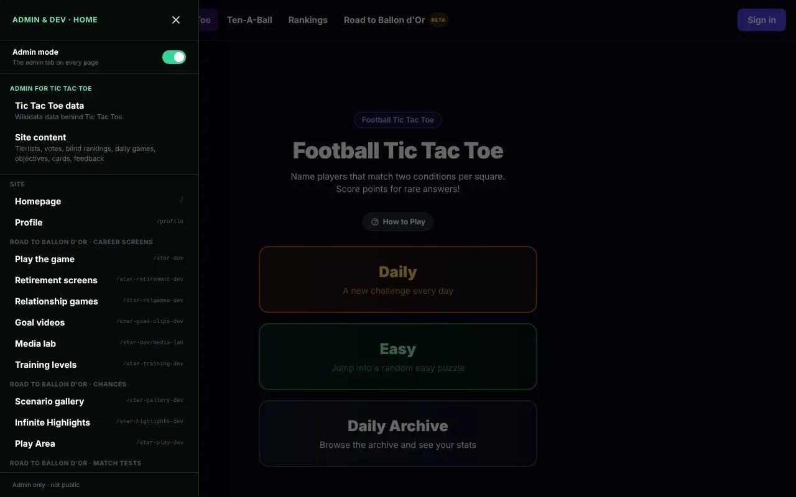
On Tic Tac Toe, the menu offers Tic Tac Toe data first, then every group.
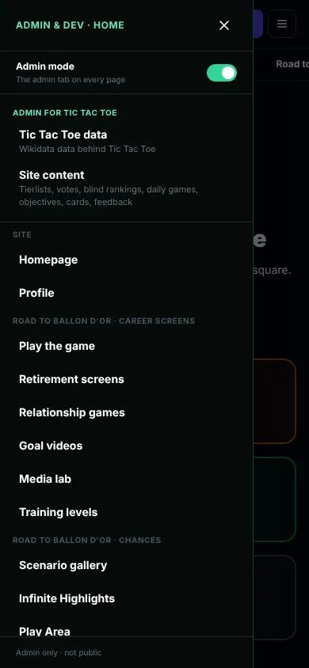
On a phone, the same tab sits at the edge of the screen.
Find it in Settings → Developer → Admin mode, or in the admin side menu. Switch it off and the tab goes away. Only admins see it.
6 · RECORD YOUR SCREEN RIGHT ON THE SITE
No OBS. Press Record screen in the Videos tab, talk while you play, press Stop. The video lands in your Drive with a clear name.
Record screenAdmin → Videos, microphone on
Stopit saves itself to your Drive
Copy for Claude“Watch this recording: …”
Claude watches it allpictures lined up with your words
The breakdown lands in Drivein Breakdowns, with the same name
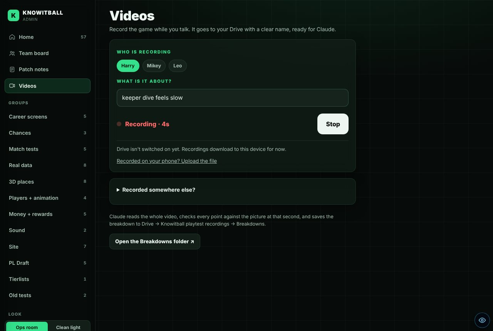
Recording. Pick who you are, say what it is about, then Record screen. The red timer shows it is running.
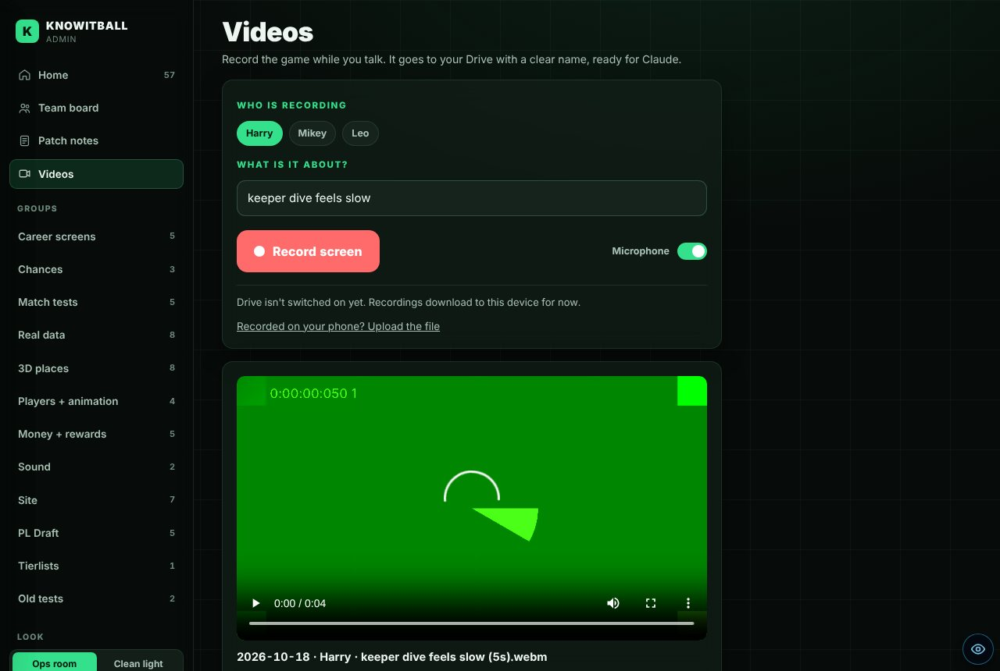
Done. The video, its Drive name, then Copy for Claude. (The green picture is the test browser’s fake screen.)
Your voice goes in too. The Microphone switch is on by default. The game's own sound joins it where the browser allows.
Connect Drive once. After that, each recording saves itself to "Knowitball screen recordings" in your own Drive, set so Claude can open the link.
The name is ready to find:2026-10-18 · Harry · keeper dive feels slow (4m12s). Its breakdown gets the same name.
Copy for Claude copies "Watch this recording: <link>". Paste it into any chat.
On a phone, record with the phone's own screen recorder, then tap "Upload the file".
7 · 17 OLD PAGES DELETED
Your page list, done. The old test pages and the code only they used are gone. The game is unchanged.
Profile (new)
Draft dev 2 (now opens Draft dev)
CL Draft admin
American draft sandbox
Scenario Builder
Bigger dev
Match Dev
Look dev
Attack dev
Bicycle kick
Zoom grass
3D dev
Spin dev
Blender dev
Sound dev
Ballon d'Or (old page)
Manager (old page)
Three old copies of the match went with them. The build guard counted 4 copies of the match. Now it counts 1 (five-a-side, still to port).
8 · ONE LOCK ON EVERY ADMIN AND TEST PAGE
Every page reads who may open it from the page list. One lock, the same everywhere.
Page
Signed out
Tester
Admin
Test pages
sign in
✓
✓
Admin pages
sign in
✗
✓
The game itself
✓
✓
✓
Before, 5 test pages had no lock. A check now fails if someone adds a page without one.
KNOWN ISSUES
Live progress bars are offneeds Mikey
Everything else on the board works now. The bars need 3 steps.
Mikey's 3 steps
Run dev_status.sql in the Supabase SQL Editor.
Pick a long password. Add it in Vercel as DEV_STATUS_TOKEN.
Add the same DEV_STATUS_TOKEN to each cloud setup, and DEV_NAME (Harry, Mikey or Leo).
Until then each card shows the latest push. Nothing breaks.
Drive saving is off until one Google setting is doneneeds Harry
Recording works now; until then each video downloads instead.
The 3 steps (Google Cloud, about 5 minutes)
In the Google Cloud project used for "Sign in with Google", switch on the Google Drive API.
Open the web sign-in id (OAuth client). Add https://knowitball.co.uk under Authorised JavaScript origins. On the consent screen, add the scope drive.file. If the screen says "Testing", add Harry, Mikey and Leo as test users.
Copy the client id into Vercel as NEXT_PUBLIC_GOOGLE_CLIENT_ID, then deploy.
drive.file only lets the site add its own files. It cannot read anything else in your Drive.
Two Match Dev controls are not anywhere else yet
"Force a chance kind" and the shot-height sliders lived only on Match Dev. They need a home in Infinite Highlights.
The lock check runs in the tests, not in the build
Your answer was "tests only". A page without a lock fails the tests, but it can still go live.
Not seen signed in on the live site
The stills come from a test copy with real GitHub data. The lock was checked by a test, not by signing in as a tester.
YOUR CALLS
Draft setup: keep only the Hero setup?
Built that way, as there was no answer. Draft dev 2 now opens Draft dev. Yes = keep it. No = bring the other setup back.
Give the two Match Dev controls a home in Infinite Highlights?
Yes = the next small build.
Push this to the live site?
It is on the Harry branch. Nothing goes live until you say push.
NEXT
Trim CLAUDE.md
The next piece of the plan, in a fresh chat.
Restyle the older admin pages
They open inside the new menu, but most still have their old look.
The numbers, if you want them
57 pages in the list, in 12 groups. 17 deleted.
Copies of the match: 4 → 1. Test pages with no lock: 5 → 0.
The team board refreshes every minute. It asks GitHub at most once a minute.
A push links to a patch note published up to 2 hours before it, or up to 4 days after it.
Tests: 355 passed, 7 failed. The same 7 fail on the copy from before this work (keeper, chances and Wembley tests).
A 5-second test recording: 0.3 MB, its length written into the file (4.7 s in the player).
The build passes. The engine guard passes.
Where things are (for whoever builds next)
Page list: lib/adminRegistry.ts
Admin home: app/admin/star · Team board: app/admin/team · Videos: app/admin/videos
The lock: components/admin/DevGate.tsx · Admin mode: lib/adminLook.ts
Push → patch note: lib/teamBoard.ts · Live bars: lib/devStatus.ts, app/api/dev-status
Recorder and Drive upload: lib/recording.ts · breakdowns: .claude/skills/screen-video, scripts/screen-video
PREVIOUS VERSIONS
v0.56 — 14 Oct 2026 · the Arcade pack
Arcade texture pack: pop banners and Arcade sounds.
Harry changes drop-down in Settings: Chances and After you pass.
The real shots camera follows the move like a TV camera.
Joystick: the team-mate takes a touch and looks up.
Still open: real shots players a little small; SAVED! / BACK TO YOU not seen in a real match.